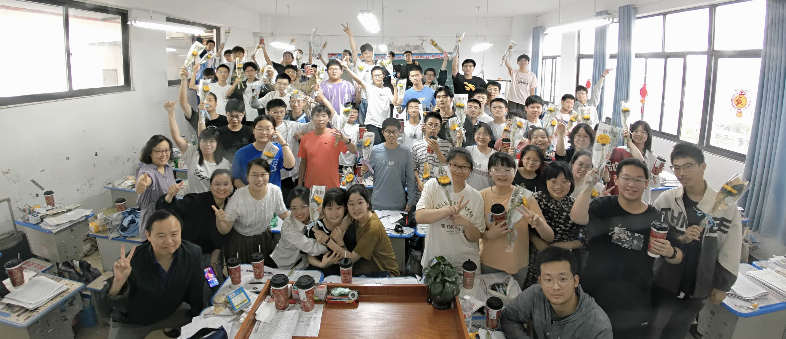
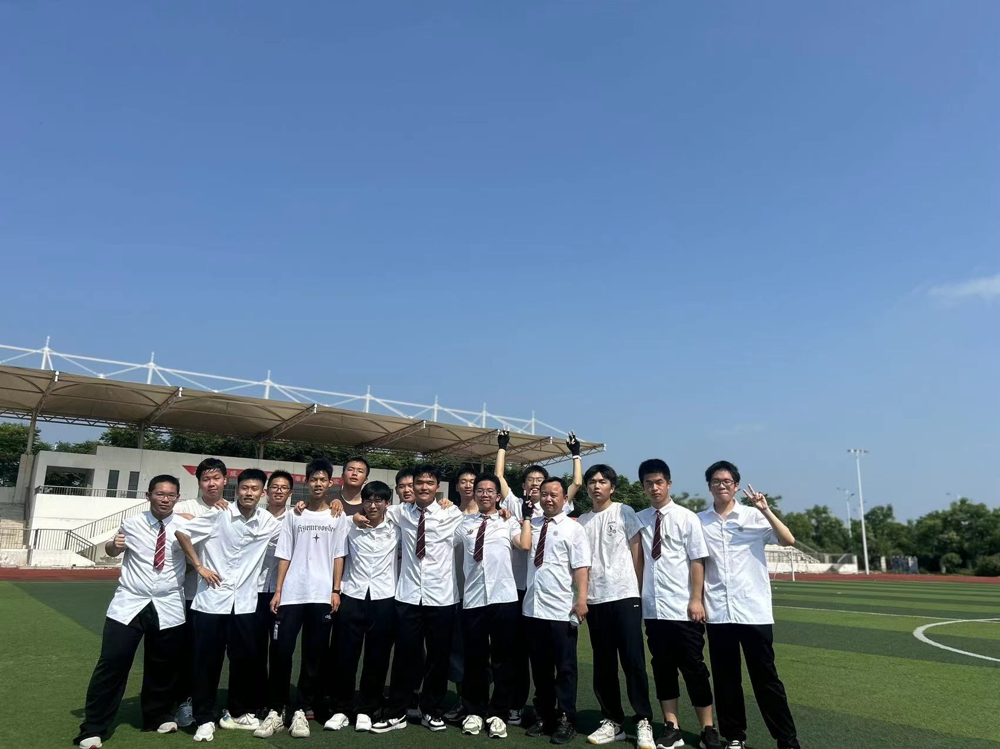

我来自于武穴中学，在这所学校度过的三年中，我不仅学习了大量的知识，也收获了许多宝贵的经历与友谊。
在高中期间，我刻苦学习，始终保持着对知识的渴望。无论是课堂上的认真听讲，还是课后的自主复习，我相信“没有付出就没有收获”。每一次考试都是一次新的挑战，而我也在这个过程中百战淬锋。
忘不了，与那些知心好友们一起欢欢笑笑，打打闹闹的样子。我们一起编造“算法”，一起讨论问题；一起在绿荫球场上奔跑，一起在月假前夕肆意狂欢；一人欢喜则全员高兴，一人悲伤便大家安慰。这些，成为了我人生中珍贵的回忆。（kiwa，琴姐，我想你们啦！）
高中时光让我成长了许多，从一个稚嫩的少年逐渐走向成熟。未来的道路上，我会继续带着这些宝贵的经验，勇敢追寻自己的梦想。
 